Multiple Testing Problem
[PDF]
Contents
1.1 Frequentist Hypothesis Testing
1.2 Single Hypothesis Testing
1.3 Organisation of Chapters
2 Family-wise Error Rate
2.1 FWER
2.2 Bonferroni Correction
2.3 Holm-Bonferroni Method
2.4 Issues with Controlling FWER
3 False Discovery Rate
3.1 FDR
3.2 Benjamini-Hochberg Procedure
3.3 Dependency of Test Statistics
3.4 Alternative Proof for Theorem 1 & 2
4 FDR Control using Empirical Bayes
4.1 Bayesian Hypothesis Testing
4.2 Bayes FDR
4.3 BH Procedure using Empirical Bayes
4.4 Quality of Bayesian FDR estimator
5 FDR Control using E-Values
5.1 E-Variable and E-Value
5.2 e-BH procedure
Bibliography
Chapter 1
Background
1.1 Frequentist Hypothesis Testing
Hypothesis testing is one of the earliest concepts of modern Statistics, and it was originally a Frequentist idea. There are two rather different ways of constructing a hypothesis test under the Frequentist category - Fisherian test and Neyman-Pearson Test.
The Fisherian test, created by R. A. Fisher, only involves one null hypothesis. The test is carried out using only one hypothesis and collected data. We will calculate, under the assumption that the null hypothesis is true, the probability of the data we receive is at least this extreme. This quantity, which is also a random variable, is known as the p-value p. To decide whether we would reject the hypothesis or not, we introduce a rather artificial threshold known as the significance level (or α), such that we will reject the hypothesis if p < α. This value, under the traditional Fisherian framework, is not pre-determined and may vary depending on the situations.
The Neyman-Pearson (NP) test, created by Jerzy Neyman and Egon Pearson, is built on the Neyman-Pearson lemma. It involves a pair of hypotheses, called null hypothesis H0 and alternative hypothesis H1. Here, we still have the concept of significance level α, but it is defined differently. Being predetermined, the significance level is the probability of rejecting the null hypothesis when the null hypothesis is in fact true. This is also known as the probability of Type I error. The significance level α is heavily used in this framework, since we construct the rejection region of the observed data Rα based on the value of α such that ℙ(Rα|H0) = α. This is very different from the Fisherian version where α is merely a threshold for rejection.
The review paper by Ronald (2005) summarised various characteristics of these two methods of test as shown below.
The basic elements of a Fisherian test are: (1) There is a probability model for the data. (2) Multidimensional data are sum- marized into a test statistic that has a known distribution. (3) This known distribution provides a ranking of the “weirdness” of various observations. (4) The p-value, which is the probability of observing something as weird or weirder than was actually observed, is used to quantify the evidence against the null hypothesis. (5) α level tests are defined by reference to the p-value.
The basic elements of an NP test are: (1) There are two hypothesized models for the data: H0 and HA. (2) An α level is chosen which is to be the probability of rejecting H0 when H0 is true. (3) A rejection region is chosen so that the probability of data falling into the rejection region is α when H0 is true. With discrete data, this often requires the specification of a randomized rejection region in which certain data values are randomly assigned to be in or out of the rejection region. (4) Various tests are evaluated based on their power properties. Ideally, one wants the most powerful test. (5) In complicated problems, properties such as unbiasedness or invariance are used to restrict the class of tests prior to choosing a test with good power properties.
Though being opposing views initially, the line separating the two methods of testing has been severely blurred and they are all mixed up in today’s teaching and applications. Still, it is good to notice certain things are, in fact, originated from different branches.
Later on, the Bayesian side of Statistics proposed the Bayes version of hypothesis testing that is different from either one of the two. The Bayes hypothesis testing, also known as the Bayes factor, will be described in a later chapter.
1.2 Single Hypothesis Testing
In a single hypothesis testing, we would either reject or not reject the null hypothesis H0 under a particular significance level. This decision may be erroneous, and there are two kinds of errors associating with a test, as shown in Table 1.
| H0 is true | H0 is false | ||||||
| Reject H0 |
|
|
|||||
| Not Reject H0 |
|
|
|||||
Here, the value 1 − β is known as the power of the test, it measures the probability that the test correctly rejects the null hypothesis when it is indeed false. α is the significance level of the test, which is (supposedly) predetermined and is used to decide the values of test statistics for the null hypothesis to be rejected. I assume these are already known to the readers.
Another concept associated with a hypothesis testing is its p-value. Assuming the null hypothesis is true, the p-value is the probability that the test statistic is as extreme or more extreme than the one we obtain. It is a random variable, and its realisations for different tests are also called p-values. When the p-value is smaller than the predetermined significance level α, we would reject the null hypothesis. One thing to notice about the p-value is that if the null hypothesis is true, it follows a Uniform(0,1) distribution.
Now, if we set our significance alpha as 0.05, meaning that we will reject our null hypothesis if the p-value is less than 0.05, we will have false positive results 5% of the time - rejecting the null hypothesis when it is true. This chance leads to the occurrence of p-hacking, a way to pick a particle set of data among many that rejects the null hypothesis when H0 is true.
The occurrence of false positives depends on the value of α. If we do multiple hypothesis testing to the same set of data while remaining with our significance level α for each individual test, we will have a much more substantial amount of errors in our results. For example, if we do 10000 hypothesis testing each at significance level 5%, we will make 500 false positive decisions on average. This kind of mistakes is known as multiple testing problem, or interchangeably as multiplicity and multiple comparisons problem. This problem does exist in reality. For example, in quantitative trait loci and microarray analyses, the number of hypotheses tested in an experiment reached thousands, which made the issue of multiple testing a more important one (Benjamini, 2010).
1.3 Organisation of Chapters
In Chapter 2, we will be talking about the family-wise error rate and two methods to control it. In Chapter 3, we will be discussing the false discovery rate, the Benjamini-Hochberg procedure, and how we can weaken the dependency condition of test statistics for the standard Benjamini-Hochberg procedure. An alternative set of proofs for this procedure will be provided as well. In Chapter 4, we will be discussing how we can rewrite the concept of false discovery rate using the langauge of empirical Bayes. In Chapter 5, we introduce the concept of e-variable and e-value, as a supplement or even alternative to p-value. We will also be talking about how the e-values can rewrite the Benjamini-Hochberg procedure.
Chapter 2
Family-wise Error Rate
In this chapter, we will be introducing the concept of family-wise error rate, and state some methods that control it.
2.1 FWER
Analogue to Table 1, we have the following table to establish the case when we have m null hypotheses
denoted by H1,H2, ,Hm.
,Hm.
| H0 is true | H0 is false | Total | |
| Reject H0 | V | S | R |
| Not Reject H0 | U | T | m − R |
| Total | m0 | m − m0 | m |
Here, the capital letters V,S,U,T and R are all random variables with R being the only observable one among them, and m0 and m are known values in advanced.
According to Hochberg and Tamhane (1987), the problem of significance arises when we view multiple hypothesis testing as separate inferences rather than related ones. This leads to the introduction of the concept of ‘family’, which is defined by the authors to be ‘any collection of inferences for which it is meaningful to take into account some combined measure of errors’.
Here, the random variable V denotes the number of Type I Errors we made among the m decisions, so we would want to limit it. We will control ℙ(V ≥ 1), the probability of making at least one false positive, and we will call this quantity as family-wise error rate, or FWER. So, we have
| FWER = ℙ(V ≥ 1) = 1 − ℙ(V = 0). |
When controlling the FWER, there are two types of controls, namely the weak control and the strong control. A particular procedure will control the FWER in the weak sense if the FWER control at level α is guaranteed only when all null hypotheses are true. We will call a procedure to control the FWER in the strong sense if the control at level α is guaranteed when at least one null hypothesis is true.
2.2 Bonferroni Correction
One way to control the FWER is by applying the Bonferrnoi correction. If we would want the overall significance level of the family of tests to be α, then we will be setting the significance level for each one of the m test lower, and the Bonferroni correction suggests 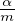.
To show this correction actually controls the FWER, we first have the Boole’s inequality which
states that for a countable set of events A1,A2,A3, , we have
, we have
| ℙ(⋃ iAi) ≤∑ iℙ(Ai), |
which follows from the sub-additivity property of probability measure.
With this inequality, since we are rejecting each null hypothesis Hi when its p-value pi ≤ , we
would have
, we
would have
|
|
which indicates that the FWER is controlled under level α.
It should not be too hard to notice that this control is too strict. For example, FWER is actually controlled under 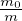α instead of α, which could be much lower if m0 is much smaller than m. Having a strict control for Type I errors implies an increase in Type II errors, which is why Bonferroni correction is not always good. However, since his correction is an easy one to apply, it is still used in practice.
2.3 Holm-Bonferroni Method
As an improvement of the Bonferroni correction, Holm (1979) proposed the following method to proceed the multiple tests.
For the m null hypotheses H1,H2, ,Hm, we compute their respective p-values P1,P2,
,Hm, we compute their respective p-values P1,P2, ,Pm
and we rank them such that P(k) denotes the k-th smallest p-value. So, P(1) ≤ P(2) ≤
,Pm
and we rank them such that P(k) denotes the k-th smallest p-value. So, P(1) ≤ P(2) ≤ ≤ P(m), and
we denote the corresponding null hypotheses as H(1),H(2),
≤ P(m), and
we denote the corresponding null hypotheses as H(1),H(2), ,H(m). We would want to control the
FWER at α.
,H(m). We would want to control the
FWER at α.
- Is P(1) ≤? If so, reject H(1) and continue. Otherwise, EXIT.
- Is P(2) ≤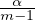? If so, reject H(2) and continue. Otherwise, EXIT.

- Is P(k) ≤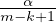? If so, reject H(k) and continue. Otherwise, EXIT.
To show that this method does in fact keep the FWER at α, we let I0 be the set of indices
corresponding to the true null hypothesis. This set is unknown to us and has size m0. Let us
assume that we make the first false positive decision at H(h). Based on the procedures stated
above, all the decisions for null hypothesis H(1),H(2), ,H(h−1) are true positives. Also,
we know for a fact that h − 1 ≤ m − m0 due to the definition of m − m0. This implies
that m − h + 1 ≥ m0, and then 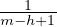 ≤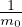. Now, since H(h) is rejected, we would have
P(h) ≤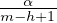 by definition, so we will then have P(h) ≤
,H(h−1) are true positives. Also,
we know for a fact that h − 1 ≤ m − m0 due to the definition of m − m0. This implies
that m − h + 1 ≥ m0, and then 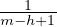 ≤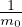. Now, since H(h) is rejected, we would have
P(h) ≤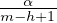 by definition, so we will then have P(h) ≤ ≤
≤ . This means, if there is
any false positive, we have at least one true null hypothesis with p-value less than 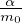.
So,
. This means, if there is
any false positive, we have at least one true null hypothesis with p-value less than 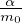.
So,
|
|
which indicates that the FWER is controlled at level α.
By looking at values of significance levels that we used to reject the null hypothesis, we can immediate realise that the Holm-Bonferroni is uniformly more powerful than the Bonferroni correction. So this is, indeed, an improvement of Bonferroni.
2.4 Issues with Controlling FWER
FWER controls the probability of making Type I errors. When we put stronger restrictions on false positives, we will have the problem of having more false negatives, i.e. having a higher probability of making Type II errors. This makes the power of the hypothesis testing decreases, and not always a suitable control.
According to Benjamini and Hochberg (1995), methods that control FWER have flaws in real-life applications.
- 1.
- Classical procedures that control the FWER in the strong sense, at levels conventional in single-comparison problems, tend to have substantially less power than the per comparison procedure of the same levels.
- 2.
- Often the control of the FWER is not quite needed. The control of the FWER is important when a conclusion from the various individual inferences is likely to be erroneous when at least one of them is. This may be the case, for example, when several new treatments are competing against a standard, and a single treatment is chosen from the set of treatments which are declared significantly better than the standard. However, a treatment group and a control group are often compared by testing various aspects of the effect (different end points in clinical trials terminology). The overall conclusion that the treatment is superior need not be erroneous even if some of the null hypotheses are falsely rejected.
To improve on these aspects, Benjamini and Hochberg proposed to control a different measure of error, the false discovery rate, which will be more ideal to help with the problem of multiplicity. The discussion will be carried out in the next chapter.
Chapter 3
False Discovery Rate
In this chapter, we will be introducing the concept of false discovery rate proposed by Benjamini and Hochberg (1995), and state some of its controlling methods.
3.1 FDR
As mentioned at the end of the previous chapter, controlling FWER is not always ideal. There is a need for a new point of view on the problem of multiplicity. A lot of the times, the number of false positive should be controlled, but we should also consider this number relative to the total number of rejections we are making. For example, among a total of 100 hypothesis testing, if we make 2 false positives among 5 rejections, it is rather serious. However, it we make 2 false positives among 50 rejections, it is more bearable. The seriousness of the loss incurred by false positives is inversely related to the number of hypotheses rejected (Benjamini & Hochberg, 1995). With that in mind, we need a different measure of error that accounts for the proportion of errors among the rejected hypotheses, which is called the false discovery rate, or FDR. The word ‘discovery’ is used since a rejected hypothesis was called a ‘statistical discovery’ by Soriç (1989).
Using the notations in Table 2, we will define a new random variable Q = V∕(V + S) where Q = 0 when V + S = 0. This is the proportion of the false positives over all the rejected null hypotheses. This is unobservable since we do not know V , or S, or their realisations v or s. We will define the FDR as the expectation of Q,
| FDR = 𝔼[Q] = 𝔼[V∕(V + S)] = 𝔼[V∕R]. |
To avoid the division by zero issue, we would have the alternative formula for FDR as
| FDR = 𝔼[V∕R|R > 0]ℙ(R > 0). |
Two properties of FDR can be easily shown. Firstly, if all the null hypotheses are true, FDR = FWER.
When s = 0 and v = r, Q = 0 if v = 0 and Q = 1 if v > 0, which means ℙ(V ≥ 1) = 𝔼[Q]. This means a
control of FDR is a control of FWER in the weak sense. The second property is, when m0 < m,
FDR is no bigger than FWER. Given m0 < m, v > 0 implies v∕(v + s) ≤ 1, which means
V ≥ 1 V ≥ v∕(v + s) and ℙ(V ≥ 1) ≥ 𝔼[Q]. This means a control of FWER will control
FDR. If a procedure controls FDR only, it would be more poewrful than one that controls
the FWER. The potential for increase in power is larger when more of the hypotheses are
non-true.
V ≥ v∕(v + s) and ℙ(V ≥ 1) ≥ 𝔼[Q]. This means a control of FWER will control
FDR. If a procedure controls FDR only, it would be more poewrful than one that controls
the FWER. The potential for increase in power is larger when more of the hypotheses are
non-true.
One should note that FDR is not the only possible measure to capture the idea of the proportion of false positives among all the rejected null hypotheses. In Benjamini and Hochberg (1995), the authors mentioned two alternatives, that of 𝔼[V∕R|R > 0] and 𝔼[V ]∕𝔼[R]. In the paper, the authors explained their reasons of not choosing these two. However, they turned out to be rather useful later on, and we will be discussed them in detail in later chapters.
3.2 Benjamini-Hochberg Procedure
In order to control the FDR as described above, Benjamini and Hochberg (1995) proposed a procedure that is latter commonly known as the Benjamini-Hochberg procedure, or BH procedure.
For the m null hypotheses H1,H2, ,Hm, we compute their respective p-values P1,P2,
,Hm, we compute their respective p-values P1,P2, ,Pm
and we rank them such that P(k) denotes the k-th smallest p-value. So, P(1) ≤ P(2) ≤
,Pm
and we rank them such that P(k) denotes the k-th smallest p-value. So, P(1) ≤ P(2) ≤ ≤ P(m), and
we denote the corresponding null hypotheses as H(1),H(2),
≤ P(m), and
we denote the corresponding null hypotheses as H(1),H(2), ,H(m). We let the level of FDR that we
would want to control at as α. The procedure works as the following:
,H(m). We let the level of FDR that we
would want to control at as α. The procedure works as the following:
- Let k be the largest i for which P(i) ≤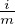α.
- Reject all H(i) where i = 1,2,
 ,k.
,k.
We would like to prove that this procedure does in fact control the FDR at level α. So we have the following theorem.
Theorem 1. For independent test statistics and for any configuration of false null hypotheses, the above precedure controls the FDR at α.
Proof. (Proof of Theorem) The theorem follows from the following lemma, whose proof will be given after.
Lemma 1. For any m0 (0 ≤ m0 ≤ m) independent p-values corresponding to true null hypotheses, and for any values that the m1 = m−m0 p-values corresponding to the false null hypotheses can take, the BH procedure satisfies the inequality
𝔼[Q|Pm0+1 = p1, ,Pm = pm1] ≤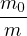α. ,Pm = pm1] ≤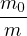α.
|
With that, whatever the joint distribution of the p-values of the false null hypotheses P′′1, ,P′′m1 is,
by integrating the above inequality, we would get
,P′′m1 is,
by integrating the above inequality, we would get
| 𝔼[Q] ≤α ≤ α. |
□
Proof. (Proof of Lemma) The proof is completed by an induction on m. When m = 1, the lemma is true immediately. Now, assuming that the statement is true for m = m′, we would like to show that it holds for m′ + 1.
If m0 = 0 and m1 = m − 0 = m, all the null hypotheses are false and Q will be 0. This means
𝔼[Q|P1 = p1, ,Pm = pm] = 0 ≤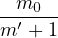α. ,Pm = pm] = 0 ≤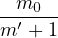α.
|
If m0 > 0, we denote the p-values corresponding to the true null hypotheses as P′i with i = 1,2, m0
with the largest being P(m0). These p-values are i.i.d. and follow Uniform(0,1). We will order the
p-values of the m1 false null hypotheses and let them be p(1) ≤ p(2) ≤
m0
with the largest being P(m0). These p-values are i.i.d. and follow Uniform(0,1). We will order the
p-values of the m1 false null hypotheses and let them be p(1) ≤ p(2) ≤ ≤ p(m1). Next, we will define
j0 to be the largest j in [0,m1] with
≤ p(m1). Next, we will define
j0 to be the largest j in [0,m1] with
| p(j) ≤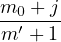α, |
and we let p′′ = p(j0).
For the sake of simplicity in notation, we will let A to denote the event P(m0+1) = p(1), ,P(m) = p(m1).
So, conditioning on P′(m0) = p for some variable p,
,P(m) = p(m1).
So, conditioning on P′(m0) = p for some variable p,
|
|
with fP′(m 0)(p) = m0pm0−1.
In the first term, we have 0 ≤ p ≤ p′′. This means we are rejecting m0 + j0 hypotheses, and we would have Q = m0∕(m0 + j0). Using the inequality
| p′′ = p(j0) ≤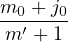α, |
we would have
![∫ p′′ ∫ p′′
𝔼[Q|P′ = p,A]f ′ (p)dp = --m0---m0pm0−1dp
0 (m0) P(m0) 0 m0 + j0
= [-m0---pm0]p′′
m0 + j0 0
= --m0---(p′′)m0
m0 + j0
--m0---m0-+-j0- ′′m0−1
≤ m0 + j0m ′ + 1 α(p)
-m0--- ′′m0− 1
= m ′ +1 α(p) .](MTP41x.png) |
For the second term, we will consider separately the values of p when p(j0) < p(j) ≤ P′(m0) = p < p(j+1),
and when p(j0) ≤ p′′ < P′(m0) = p < p(j0+1). It is important to note that, based on the definition of
j0 and p′′, no hypothesis can be rejected due to the values of p,p(j+1),p(j+2), ,p(m1).
Therefore, when all hypotheses are considered with ordered p-values, a hypothesis H(i) could
be rejected only if there exists k with i ≤ k ≤ m0 + j − 1, where p(k) ≤ α ⋅ k∕(m′ + 1),
or
,p(m1).
Therefore, when all hypotheses are considered with ordered p-values, a hypothesis H(i) could
be rejected only if there exists k with i ≤ k ≤ m0 + j − 1, where p(k) ≤ α ⋅ k∕(m′ + 1),
or
| 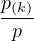 ≤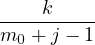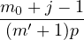α. |
When conditioning on P′(m0) = p, the P′i∕p for i = 1,2, ,m0 − 1 are i.i.d. random variables following
Uniform(0,1), and the pi∕p for i = 1,2,
,m0 − 1 are i.i.d. random variables following
Uniform(0,1), and the pi∕p for i = 1,2, ,j are numbers corresponding to false null hypotheses
between 0 and 1. Then,
,j are numbers corresponding to false null hypotheses
between 0 and 1. Then,
| 𝔼[Q|P′(m0),A] ≤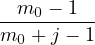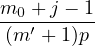α = 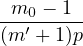α. |
So,
|
|
Adding up the two terms, we would have
𝔼[Q|A] ≤ α(p′′)m0−1 + 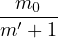α(1 − (p′′)m0−1) = α(p′′)m0−1 + 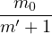α(1 − (p′′)m0−1) =  α, α,
|
which completes the proof. □
3.3 Dependency of Test Statistics
As stated in bold in Theorem 1, one condition for the BH procedure is that the test statistics need to be independent. This is quite a big restriction, since many hypothesis tests carried out in practice are dependent to each other. There is a need to make some extension of the method on that aspect, and these gaps are filled mostly by Benjamini and Yekutieli (2001). Here, I will state without proof some of the key improvements.
We have already known from the previous section that the BH procedure will control the FDR at (m0∕m)α if test statistics are independent. By Theorem 5.1 of Benjamini and Yekutieli (2001), we have
Independent Test Statistics:
FDR ≤ α, α,
|
and Independent and Continuous Test Statistics:
FDR =  α. α.
|
The main result of Benjamini and Yekutieli (2001) based on the dependency type positive regression dependency on each one from a subset, or PRDS. First, we will call a subset D of Ω as increasing if for some x ∈ D, y ∈ Ω and y ≥ x imply y ∈ D. For example, the first quadrant of the ℝ2 plane is an increasing set. Here, if x and y has more than one coordinate, y ≥ x means yi ≥ xi for every coordinate. Now, if test statistics vector X is PRDS on I0, it means that for any increasing set D and each i ∈ I0 ⊂ I, ℙ(X ∈ D|Xi = x) is non-decreasing as x increases. With this, we can state the main result.
Theorem 2. If the joint distribution of the test statistics is PRDS on the subset of test statistics corresponding to true null hypotheses, the BH procedure controls the FDR at level less than or equal to (m0∕m)q.
Proof. Let us define the constants involved in the BH procedure as
qi = 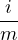q, i = 1,2, ,m. ,m.
|
Let Av,s denote the event that the BH procedure rejects exactly v true and s false null hypotheses. Here, k = v + s hypotheses have been rejected, so all these hypotheses will have p-values ≤ qv+s. The FDR will then be
| FDR = ∑ s=0m1 ∑ v=1m0 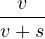ℙ(Av,s). |
Here, v starts from 1 since FDR = 0 if v = 0, and v + s≠0 for the fraction to make sense.
Now, we would want to find ℙ(Av,s). We claim that
| ℙ(Av,s) = 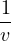∑ i=1m0 ℙ({Pi ≤ qv+s}∩ Av,s). |
Let us prove this claim. For a fixed v and s, let ω be a subset of {1,2, ,m0} of size m0. Then, we let
Av,sω be the event in Av,s where the v rejected true hypotheses have index ω. Here, the
index set {1,2,
,m0} of size m0. Then, we let
Av,sω be the event in Av,s where the v rejected true hypotheses have index ω. Here, the
index set {1,2, ,m0} is for the set of true null hypotheses. Also, the set of Av,sω for
all possible ω is a partition of Av,s with each of its element being disjoint. So, we would
have
,m0} is for the set of true null hypotheses. Also, the set of Av,sω for
all possible ω is a partition of Av,s with each of its element being disjoint. So, we would
have
|
|
This is because, if i ∈ ω, {Pi ≤ qv+s} means that the hypothesis with index i is rejected. So,
{Pi ≤ qv+s}⊃ Av,sω, and ℙ({Pi ≤ qv+s}∩ Av,sω) = ℙ(Av,sω). If i ω, i will still be in {1,2,
ω, i will still be in {1,2, ,m0}
since this is the way i is summed. This implies that Hi becomes a rejected true null hypothesis with
index not inside ω, which contradicts with Av,xω. So,{Pi ≤ qv+s} and Av,xω are disjoint events, making
the probability of their intersection 0.
,m0}
since this is the way i is summed. This implies that Hi becomes a rejected true null hypothesis with
index not inside ω, which contradicts with Av,xω. So,{Pi ≤ qv+s} and Av,xω are disjoint events, making
the probability of their intersection 0.
Then, we would have
 |
which implies ℙ(Av,s) = 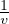 ∑ i=1m0ℙ({Pi ≤ qv+s}∩ Av,s).
Combining this with the statement of FDR, we have
|
|
We would want the equation to be independent of v, but we still have to be dependent on it since we have Av,s. This means we need to rewrite it using i and k = v + s.
For i = 1,2, ,m0, let P(i) be the vector of m − 1 p-values excluding Pi. Then, we let Cv,s(i) be
the event in which if Pi is rejected then v − 1 true null hypotheses and s false null hypotheses are
rejected alongside with it. Thus, we have the equality
,m0, let P(i) be the vector of m − 1 p-values excluding Pi. Then, we let Cv,s(i) be
the event in which if Pi is rejected then v − 1 true null hypotheses and s false null hypotheses are
rejected alongside with it. Thus, we have the equality
| {Pi ≤ qv+s}∩ Av,s = {Pi ≤ qv+s}∩ Cv,s(i). |
We then denote Ck(i) = ⋓j≤kCv,s(i). For each i, Ck(i) are disjoint, so we can rewrite the FDR as
|
|
which is what we want.
Now, we will try to use the PRDS property. Let Dk(i) = ∪j≤kCj(i) for k = 1,2, ,m.
Notice that Dm(i) is the entire space. It is easy to spot that Dk(i) are nondecreasing set.
Using PRDS, for p ≤ p′, we have ℙ(D|Pi = p) ≤ ℙ(D|Pi = p′) for some nondecreasing
set D. We would also have, for j ≤ l , qj ≤ ql and ℙ(D|Pi ≤ qj) ≤ ℙ(D|Pi ≤ ql). This
means
,m.
Notice that Dm(i) is the entire space. It is easy to spot that Dk(i) are nondecreasing set.
Using PRDS, for p ≤ p′, we have ℙ(D|Pi = p) ≤ ℙ(D|Pi = p′) for some nondecreasing
set D. We would also have, for j ≤ l , qj ≤ ql and ℙ(D|Pi ≤ qj) ≤ ℙ(D|Pi ≤ ql). This
means
| 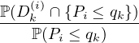 ≤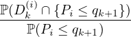 |
by the definition of conditional probability and setting j = k, l = k + 1, and D = Dk(i).
Using the above inequality, we have
|
|
since Dj+1(i) = Dj(i) + Cj+1(i) for all k ≤ m − 1. Notice that C1(i) = D1(i), we repeat the above
inequality for k = 1,2, ,m − 1 and get
,m − 1 and get
| ∑ k=1m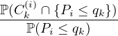 ≤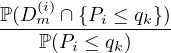 = 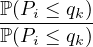 = 1, |
using the fact that Dm(i) is the entire space.
Thus,
 |
The proof is completed. □
Remark. This proof can in fact be used to proof Theorem 1. Given that
| FDR = ∑ i=1m0 ∑ k=1m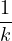ℙ({Pi ≤ qv+s}∩ Ck(i)), |
since the test statistics are independent for the BH procedure, we would have independent p-values and that means
|
|
So, Theorem 1 has been shown.
We have shown that the control of FDR is at (m0∕m)α for most of the scenarios in practice. Notice that the coefficient m0∕m is occurring every single time, if we can have an estimate for m0 (we already know m), we can have a better procedure. This is because, although the level is (m0∕m)α, since we do not know m0 we have to set the level at α which could be too conservative sometimes. If we can estimate m0, we can control the FDR at α exactly. Many research have been done in order to estimate m0, and we will be talking about some of those work in the next chapter.
3.4 Alternative Proof for Theorem 1 & 2
The following proofs for the BH procedure control and the version with weaker dependency condition are provided by E. Candés and R. Foygel Barber.
We want to prove the FDR control at α, or FDR ≤ (m0∕m)α ≤ α where the equality of FDR holds for independent and continuous test statistics. Earlier on, we define FDR to be FDR = 𝔼[V∕R]and V∕R = 0 when R = 0. Here, we will use an alternative definition. We define the value false discovery proportion, or FDP, to be
|
|
Here, A ∨ B = max(A,B). With FDP, we would have
| FDR = 𝔼[FDP] |
and this is clearly equivalent to the previous definition. Now, to show the proof, we will rewrite FDP in the form of
| FDP = ∑ i∈H0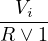 |
where i ∈ H0 is the set of index corresponding to true null hypotheses with size m0, and V i = 1{Hi is rejected}. We then see that if we claim 𝔼[V i∕(R ∨ 1)] = α∕m
FDR = 𝔼[FDP] = 𝔼[∑
i∈H0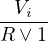] = ∑
i∈H0𝔼[ ] = ∑
i∈H0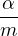 = ] = ∑
i∈H0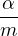 =  α α
|
This means, to prove the FDR control, we just need to show that 𝔼[V i∕(R ∨ 1)] = α∕m for the independent case or 𝔼[V i∕(R ∨ 1)] ≤ α∕m for the PRDS case.
Proof. (Theorem 1)
To prove Theorem 1, we only need to prove the claim 𝔼[V i∕(R ∨ 1)] = α∕m. Now, we will have
 = ∑
k=1m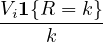. = ∑
k=1m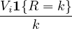.
|
Also, based on the BH procedure, we have two observations. Firstly, when there are k rejections, some Hi will be rejected if and only if pi ≤ (k∕m)α. So, we have V i = 1{Hi is rejected} = 1{pi ≤ (k∕m)α}. Secondly, if we reject some Hi, or we have pi ≤ (k∕m)α, let us take pi and set its value to 0, and denote the new number of rejection by R(pi → 0). This new number is exactly the same as R. If we reject Hi, since the rejection of hypotheses only take out the k hypotheses and this change of pi is not affecting the hypotheses we are taking. If we do not reject Hi, V i will be 0 so the value of R would not matter. Thus, we would have V i1{R = k} = V i1{R(pi → 0) = k}.
Combining the observations and taking the expectation conditional on all p-values except for pi, i.e.
ℱi = {p1, ,pk−1,pk+1,
,pk−1,pk+1, ,pm}, we have
,pm}, we have
|
|
where the last equality holds due to the face that pi ∼ Uniform(0,1) under true null hypotheses and they are independent. Also, given ℱi and pi = 0, 1{R(pi → 0) = k} is deterministic. This also means ∑ k=1m1{R(pi → 0) = k} = 1. This is because by setting pi = 0, we will have at least one rejection and R(Pi → 0) ≥ 1. Also, since R(Pi → 0) is deterministic and fixed, it will be one of the values from 1 to m. So, we have
𝔼[ |ℱi] = 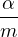∑
k=1m1{R(p
i → 0)} = |ℱi] = 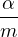∑
k=1m1{R(p
i → 0)} =  . .
|
Using the tower property 𝔼[X] = 𝔼[𝔼[X|Y ]] for two random variables X and Y , we can conclude that 𝔼[V i∕(R ∨ 1)] = 𝔼[𝔼[V i∕(R ∨ 1)]|ℱi] = 𝔼[α∕m] = α∕m. □
From the above proof, we only use the independence between the true null hypotheses, and the dependency between the false ones are not important to the proof. This means, assuming all test statistics being independent may be too strong of a condition, and we certainly should weaken it. With that, we have Theorem 2 that only assumes PRDS on the true nulls.
Proof. (Theorem 2)
As mentioned earlier, to prove Theorem 2, we only need to prove the claim 𝔼[V i∕(R∨ 1)] ≤ α∕m under PRDS on true null hypotheses. We have the same setting as the previous proof. Then, we set qk = k∕m ⋅ α and have
![--Vi- m∑ 1{pi ≤-qk}1{R-=-k}
R ∨ 1 = k
km=1
= ∑ 1{pi ≤-qk}(1{R-≤-k}−-1{R-≤-k-−-1})
k=1 k
m∑ m∑
= 1{pi ≤-qk}1{R-≤-k} − 1{pi ≤-qk}1{R-≤-k−-1}
k=1 k k=1 k
m∑ m∑−1
= 1{pi ≤-qk}1{R-≤-k} − 1-{pi-≤-qk+1}1{R-≤-k}
k=1 k k=0 k+ 1
1{p ≤ q }1 {R ≤ m } m∑−11 {p ≤ q}1 {R ≤ k } m∑− 11{p ≤ q }1{R ≤ k}
= ---i---m-----------+ ---i----k-------- − ---i---k+1---------
m k=1 k k=1 k + 1
1{pi ≤ qm}1 {R ≤ m } m∑−1 1{pi ≤ qk} 1{pi ≤ qk+1}
= --------m----------+ [----k---- − ---k+-1----]1{R ≤ k}.
k=1](MTP96x.png) |
Notice that
𝔼[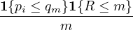] =  , ,
|
since R ≤ m is always true and pi follows Uniform(0,1) under true null. So, if we can show that
𝔼[∑
k=1m−1 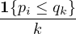 −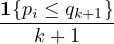 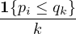 −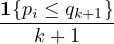![]](MTP102x.png) 1{R ≤ k}] ≤ 0, 1{R ≤ k}] ≤ 0,
|
our claim will be proved. Now, for each k, we have
![𝔼[[1{pi ≤-qk}− 1{pi-≤-qk+1}]1{R ≤ k}]
k k+ 1
ℙ(pi ≤-qk,R-≤-k) ℙ-(pi ≤-qk+1,R-≤-k)
= k − k + 1
ℙ(R-≤-k|pi ≤-qk)ℙ(pi ≤-qk) ℙ(R-≤-k|pi ≤-qk+1)ℙ(pi ≤-qk+1)
= k − k+ 1
ℙ(R ≤ k|pi ≤ qk+1 )ℙ(pi ≤ qk) ℙ(R ≤ k |pi ≤ qk+1)ℙ(pi ≤ qk+1)
≤ ------------k------------− -----------k+-1------------ by PRDS
ℙ(p ≤ q ) ℙ(p ≤ q )
= ℙ(R ≤ k|pi ≤ qk+1)[---i---k-− ---i---k+1-]
k k + 1
= ℙ(R ≤ k|pi ≤ qk+1)[kα-⋅ 1-− (k-+-1)α⋅-1--]
m k m k+ 1
= 0.](MTP103x.png) |
For the inequality, we used the PRDS property and said that
| ℙ(R ≤ k|pi ≤ qk) ≤ ℙ(R ≤ k|pi ≤ qk+1). |
By definition of PRDS, for any increasing set D and each i ∈ I0 ⊂ I, P(X ∈ D|Xi = x) is non-decreasing as x increases. A consequence of this is that if we have x ≤ x′, we would have
| ℙ(X ∈ D|Xi ≤ x) ≤ ℙ(X ∈ D|Xi ≤ x′). |
Notice that when pi increases, we will have less rejections and make {R ≤ k} increases. So, {R ≤ k} is indeed an increasing set. □
Chapter 4
FDR Control using Empirical Bayes
The following content are mostly adapted from the book “Large-Scale Inference” by Efron (2010).
4.1 Bayesian Hypothesis Testing
In the Frequentist setting, or more specifically the Neyman-Pearson setting, we are making a decision between two hypothesis - null hypothesis H0 and alternative hypothesis H1. In the Bayesian setting, things are similar but the result of the test is viewed as a random variable H. If the null hypothesis is true, we will have H = 0; and if the null hypothesis is false, we will have H = 1. Their prior probabilities are ℙ(H = 0) = π0 and ℙ(H = 1) = π1 = 1 − π0.
The test statistics will be denoted as Z, and it has different distributions under true and false null hypothesis. When H = 0, we have Z ∼ f0 with CDF F0. When H = 1, we have Z ∼ f1 with CDF F1. Combining these two, we have a hierarchical model with H ∼ Bernoulli(π1) and Z ∼ FH. So, the pdf of Z is ℙ(Z = z) = f(z) = π0f0(z) + π1f1(z).
Now, the probability of the null hypothesis being true or false will be updated once we have collected data. Assuming we observe a test statistics value Z = z, we would like to know the probabilities ℙ(H = 0|z) and ℙ(H = 1|z). If one is bigger than the other, we will know which hypothesis we should pick. To compute these two probabilities, we will use the Bayes rule. This gives us
| ℙ(H = 0|z) = 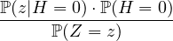 = |
and
| ℙ(H = 1|z) = = . |
The comparison between ℙ(H = 0|z) and ℙ(H = 1|z), after some computations, is equivalent to the comparison between π0 ⋅ f0(z) and π1 ⋅ f1(z).
The ratio of these two probabilities has its own name, the Bayes factor. Normally, we will put the probability for the null hypothesis at the denominator. There are certain existing thresholds for this factor for people to determine how strong the evidence is to choose a hypothesis, just like the frequently used 0.05 and 0.1 significance level for Frequentist tests.
4.2 Bayes FDR
The setting in the above section can be extended to the case where we are doing multiple hypothesis testing. The setting will be identical, and we will let the total number of tests be N.
Now, for a subset A of the real line, we define φ(A) = ℙ(H = 0|z ∈ A). Using Bayes rule, we have
| φ(A) = ℙ(H = 0|z ∈ A) = = |
where F0(A) = ∫ Af0(z)dz and F(A) = ∫ Af(z)dz.
If we set A in such a way that z ∈ A means the null hypothesis if false, the above probability will be the probability of the null hypothesis actually being false given that we reject it, which is exactly what false discovery rate is about. Thus, the quantity φ(A) where z ∈ A means the null hypothesis if false is known as the Bayes false discovery rate, or BFDR. For simplicity, we will also write φ(A) as Fdr(A).
This quantity is a random variable and it involves π0, f0, and f1. Here, π0 is almost known, and is usually near 1 in practice. Since we are normally calculating this quantity in the context of multiple testing like genetic research, we would only have a very small portion of false null hypothesis, making the ratio close to 1. The function f0 is also known, since we would normally have z-values (or z-scores) as the test statistics, which follows a standard normal distribution N(0,1). The remaining f1 is unknown, and it is hard to find out.
To deal with difficulties of this kind, people thought, since we have so many data available, why don’t we do an estimate of the distribution of f as that is the only unknown? If we can estimate f, we can estimate the target quantity. This idea of improving Bayesian inference with Frequentist estimations grows out to be a whole branch of thoughts known as the empirical Bayes, with this name coined by its founder Herbert Robbins in Robbins (1956).
We let (A) be the empirical distribution of the N z-values and define it to be
| (A) = , |
i.e. the proportion of the z-values that are being rejected. Now, substituting this value into Fdr, we get
| Fdr(A) = (A) = . |
For large values of N, we would expect (A) to be a good estimation of F(A), and by extension Fdr(A) being a good estimation of Fdr(A).
4.3 BH Procedure using Empirical Bayes
Recall from earlier chapter that the BH procedure is a method that controls the FDR of the multiple testing. Now that we have Bayes FDR, can we rewrite BH procedure using that?
The BH procedure of n hypothesis tests that controls the FDR at level α will reject all the smallest k p-values with
k = max{i : p(i) ≤ α}. α}.
|
We can map the p-values with z-values using
| pi = F0(zi) |
for F0(⋅) being the cdf of Z when the null hypothesis is true, i.e. being N(0,1). This means each p(i) will be mapped to F0(z(i)), and
| = = (z(i)). |
So, the BH procedure threshold can be transformed, and we have
p(i) ≤ α α ≤ α ≤ α ≤ α ≤ α Fdr(z(i)) = π0 ⋅ ≤ π0α ≤ α. Fdr(z(i)) = π0 ⋅ ≤ π0α ≤ α.
|
Thus, the BH procedure using empirical Bayes controlling FDR at will be rejecting all the k hypothesis with k being the largest value of index i with Fdr(z(i)) ≤ α.
It is not straightforward to understand the rationale behind the BH procedure. Why is the critical line what it is? Why do we reject until the last crossing? It is all a bit mysterious and we can minimally justify BH procedure by simply stating and proving that it works. The empirical Bayes approach shows the power of thinking about multiple testing problems in a Bayesian framework. Using the Bayesian machinery, we are able to arrive at the BH procedure far more simply than by restricting ourselves to the Frequentist framework. We only need to compute the estimated Bayes FDR of each one of the tests and cut off at α level. The procedure become easier to understand.
4.4 Quality of Bayesian FDR estimator
The empirical Bayes BH procedure is phrased using Fdr, the Bayesian FDR estimator. How good is this estimator exactly? Is it good enough so that the procedure will yield satisfying results? In this section we will be exploring the quality of the estimator.
To find out how good an estimator Fdr(A) is, we need to adopt some notations. We let N0(A) = #{i : zi ∈ A and being true null} denote the number of true nulls being rejected, and e0(A) = 𝔼[N0(A)] be its expectation. Furthermore, we let N1(A) = #{i : zi ∈ A and being false null} denote the number of false nulls being rejected, and e1(A) = 𝔼[N1(A)] be its expectation. So, the total number of rejected hypothesis will be N+(A) = #{i : zi ∈ A} = N0(A) + N1(A), and its expectation is e+(A) = 𝔼[N+(A)]. So, we would have
| Fdr(A) = = = |
and
| Fdr(A) = . |
In addition, we will need another quantity, the false discovery proportion. The false discovery portion, Fdp, is defined to be
| Fdp(A) = |
and this is the same quantity as defined in earlier chapter. So, we would also have Fdr(A) = 𝔼[Fdp(A)]. To discuss the relationships between the above mentioned quantities and illustrate how good Fdr(A), we will state without proof the following two lemmas.
Lemma 2. Suppose e0(A) is the same as the conditional expectation of N0(A) given N1(A). Then the conditional expectation of Fdr(A) and Fdp(A) given N1(A) satisfy
| 𝔼[Fdr(A)|N1(A)] ≥ φ1(A) ≥ 𝔼[Fdp(A)|N1(A)] |
where
| φ1(A) = . |
This lemma says that for every value of N1(A), the conditional expectation of Fdr(A) exceeds that of Fdp(A), so that in the sense the empirical Bayes FDR is a conservatively biased estimate of the actual FDP. Taking expectation over N1(A) and applying Jensen’s inequality shows that
| φ(A) ≥ 𝔼[Fdp(A)] = FDR(A), |
so that the Bayes FDR is an upper bound of the traditional FDR.
Lemma 3. Let γ(A) indicate the squared coefficient of variation of N+(A),
| γ(A) = . |
Then Fdr(A)∕φ(A) has approximate mean 1 + γ(A) and variance γ(A).
This lemma quantifies the obvious: the accuracy of Fdr(A) as an estimate of the Bayes FDR depends on the variability of the denominator of N+(A).
Chapter 5
FDR Control using E-Values
The following content are mostly adapted from the paper by Wang and Ramdas (2020).
5.1 E-Variable and E-Value
As mentioned in earlier chapter, p-value is a random variable of the probability that the test statistics is at least as extreme under the assumption that the null hypothesis is true. This random variable is phrased in terms of probability of an event. Here, we proposed a different random variable, the e-variable, which can serve as either as an enhancement or as an alternative to p.
For data X following distribution P and null hypothesis ℋ0, the e-variable is a nonnegative random variable E for testing null hypotheses ℋ0 that is defined by
| supP0∈ℋ0𝔼P0E(X) ≤ 1. |
Here, the realisations of e-variables are called e-values to avoid confusion between the random variable and its realisation like that of the p-value.
To illustrate its difference to p-value, let us define p-variable (the random variable version of p-value). A random variable P is called a p-variable for testing ℋ0 if
| supP0∈ℋ0ℙP0(P(X) ≤ α) ≤ α ∀α ∈ (0,1). |
We can see immediately that p-variables control the probability while e-variables control expectation. To relate the two concepts, we have the following theorem.
Proof. We fix a P0 ∈ℋ0. Then, we have
|
|
□
Remark. This E−1 is rather conservative, since the bound by Markov’s inequality may not be tight.
5.2 e-BH procedure
Earlier on, we have mentioned about the BH procedure, and it involves cutting off at the largest i for which p(i) ≤α. Since we have already shown that we could replace P with E−1, we could modify the BH procedure using E instead of P.
For each of the hypothesis H1,H2, ,Hm, they have the e-values e1,e2,
,Hm, they have the e-values e1,e2, ,em. We will order
them in descending order, and have them as e(1) ≥ e(2) ≥
,em. We will order
them in descending order, and have them as e(1) ≥ e(2) ≥ ≥ e(m). We will reject all the hypotheses
with the largest k e-values where k is the largest i for which ≥. This should not be a surprise.
Since p(i) = 1∕e(i), we have
≥ e(m). We will reject all the hypotheses
with the largest k e-values where k is the largest i for which ≥. This should not be a surprise.
Since p(i) = 1∕e(i), we have
p(i) ≤ α α ≥ ≥ e(i) ≥ e(i) ≥ ⋅ ⋅  e(i) ≥ e(i) ≥ . .
|
This modified version of BH procedure using e-values is known as the e-BH procedure. To make sure this procedure really works, we will prove its FDR control.
Proof. Recall from earlier, we have the definition
FDP = = ∑
i∈H0
|
where we sum over all the indices of true null hypotheses H0. Now, for any rejected i, we will have
≤ ≤ e(i) e(i)
|
where the first inequality is due to the fact that i ≤ R. We will take the first and last term of the inequality after multiplying V i and sum over all true null. This means, we have
FDP = ∑
i∈H0 ≤∑
i∈H0 ≤∑
i∈H0
|
and this gives us
| FDP ≤∑ i∈H0 ≤∑ i∈H0 ≤∑ i∈H0e(i). |
Taking expectation of the above inequality, we have
FDR = 𝔼[FDP] ≤ 𝔼[∑
i∈H0e(i)] =  ∑
i∈H0𝔼[e(i)] ≤∑
i∈H01 = α. ∑
i∈H0𝔼[e(i)] ≤∑
i∈H01 = α.
|
□
Bibliography
[1] Benjamini Y., Hochberg Y. (1995) Controlling the False Discovery Rate: a Practical and Powerful Approach to Multiple Testing. Journal of the Royal Statistical Society, Series B, 57 No. 1, 289-300.
[2] Benjamini Y., Yekutieli D. (2001) The Control of the False Discovery Rate in Multiple Testing Under Dependency. The Annals of Statistics, 29, No. 4, 1165-1188.
[3] Benjamini Y., Hochberg Y. (2010) Discovering the False Discovery Rate. Journal of the Royal Statistical Society, Series B, 72, Part 4, 405-416.
[4] Efron, B. (2010) Large-Scale Inference. Cambridge University Press.
[5] Hochberg, Y.,Tamhane, A. C. (1987) Multiple Comparison Procedures. Wiley.
[6] Holm S. (1979) A Simple Sequentially Rejective Multiple Test Procedure. Scandinavian Journal of Statistics. 6, 65-70.
[7] Robert H. (1956) An Empirical Bayes Approach to Statistics, Berkeley Symposium on Mathematical Statistics and Probability, 3.1, 157-163.
[8] Ronald C. (2005) Testing Fisher, Neyman, Pearson, and Bayes, The American Statistician, 59, No.2, 121-126.
[9] Soriç, B. (1989) Statistical “discoveries” and effect size estimations. Journal of the American Statistical Association. 84, 608-610.
[10] Wang, R., Ramdas, A. (2020) False discovery rate with e-values. arXiv preprint, arXiv:2009.02824v2.